Unit art styles
Every unit, both factions, drawn by the same code that would ship in the game. Swipe sideways on the wide sheets.
Flat variations
Three takes on the flat look you liked, all drawn from the same shapes. Each unit now casts a shadow shaped like itself, has more detail, and the sniper, flak, fighter and bomber are redrawn. Row pairs are Orange Star / Blue Moon.
Side by side at phone size
Top to bottom: Current (flat), Flat A: pure flat, Flat B: banded shading, Flat C: tone outline. About a 40 px tile on a 3x screen.
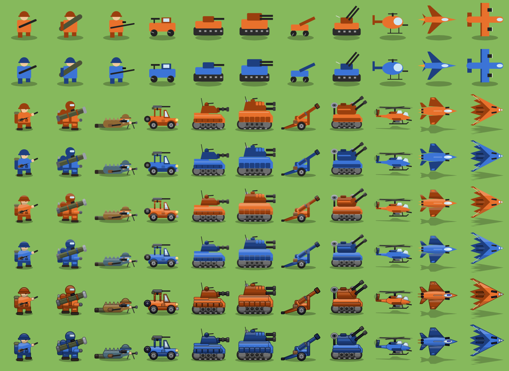
The same at 1x
Native size, where readability is decided.
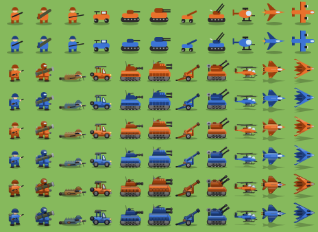
Before and after
Columns: Current (flat), Flat A: pure flat, Flat B: banded shading, Flat C: tone outline. Units: sniper, flak, fighter, bomber, infantry, copter.
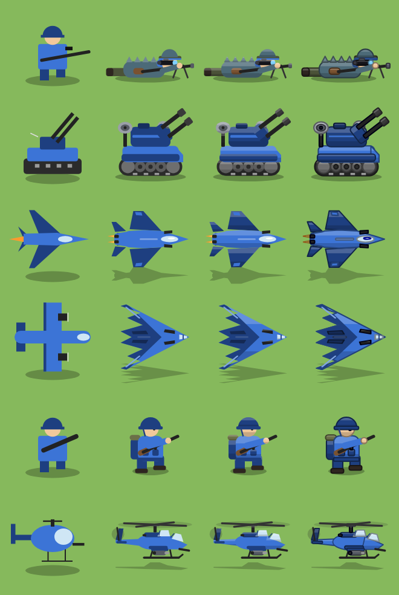
Loupe: flak
Flat B: banded shading large, at phone size and at 1x on every terrain.
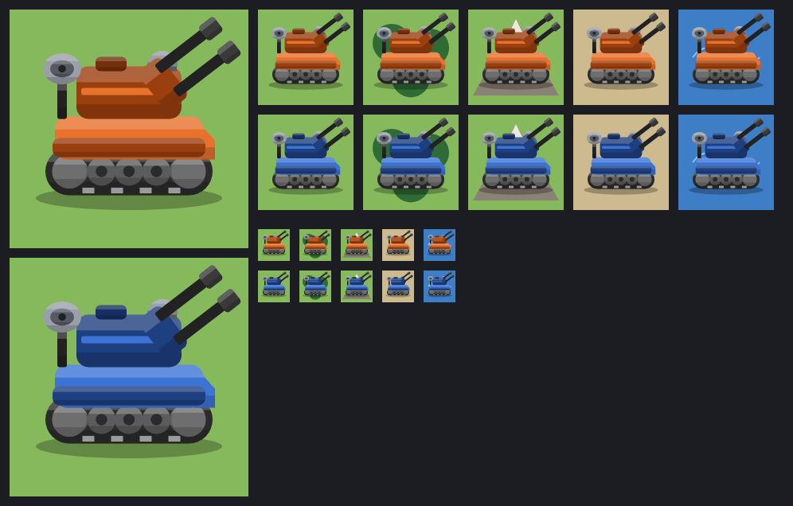
Animation: flak
One second of the idle animation in eight frames.
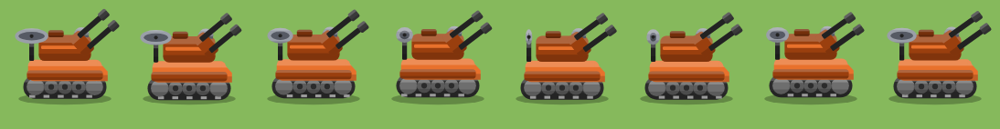
Current (flat)
the game today: flat shapes, no outlines
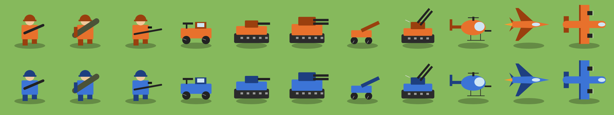
Flat A: pure flat
today’s look, more detail, shaped shadows
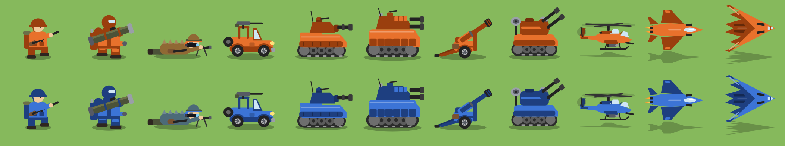
Flat B: banded shading
flat fills with a light top band and dark underside on each part
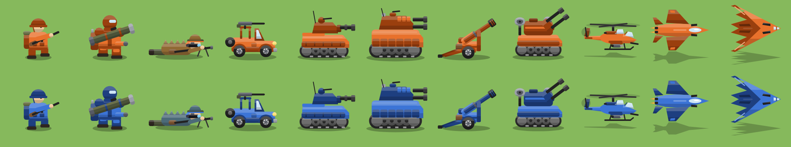
Flat C: tone outline
banded shading + soft outline in each part’s own darker colour
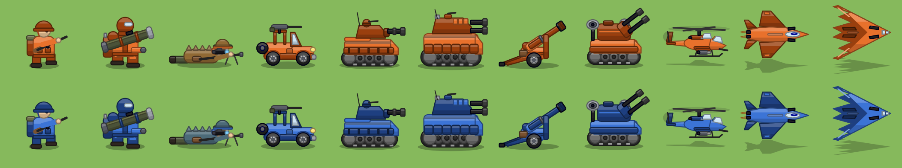
Earlier explorations
The first round of different directions, kept for comparison.
Side by side at phone size
Top to bottom: Current (flat), Pixel art, Toy vector, Flat badge. About a 40 px tile on a 3x screen.
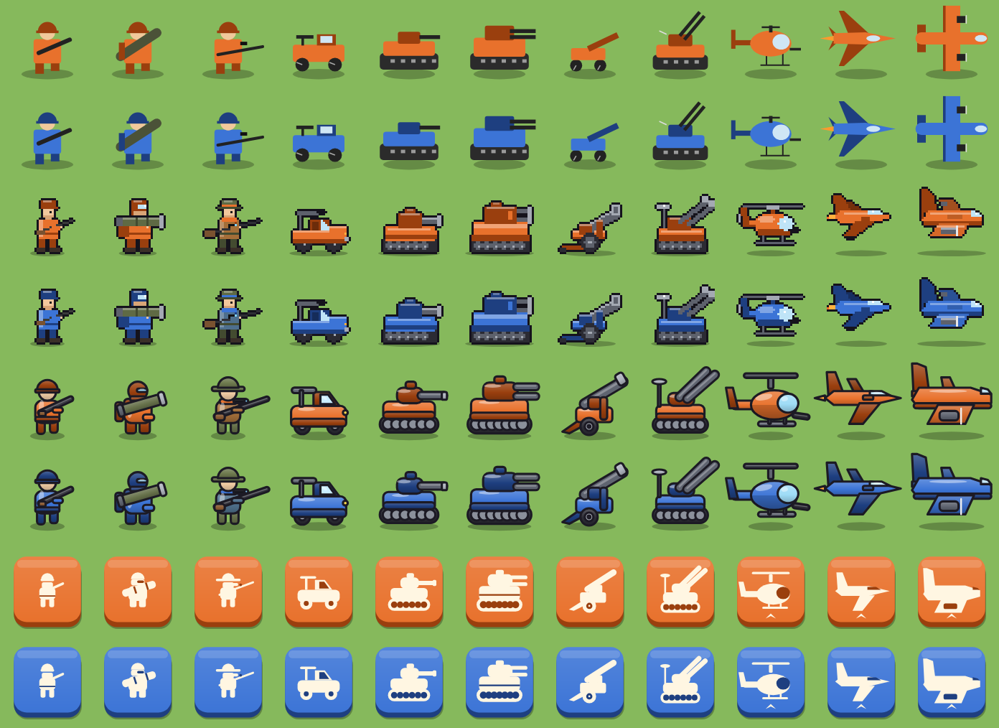
The same at 1x
Native size, where readability is decided.
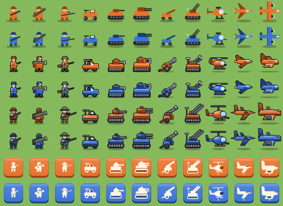
Pixel art
32×32 grid, auto-outlined, nearest-neighbour scaled
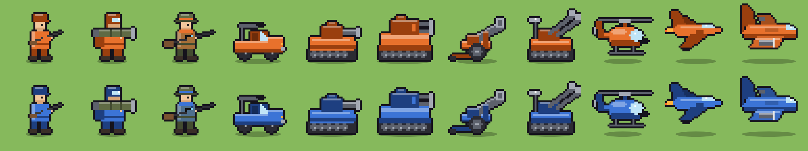
Toy vector
bold outlines, gradients, specular highlights, consistent side view
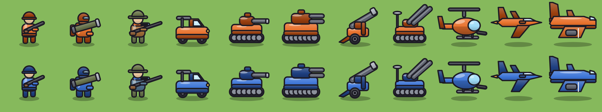
Flat badge
cream glyph on a faction-coloured plate; built for tiny sizes
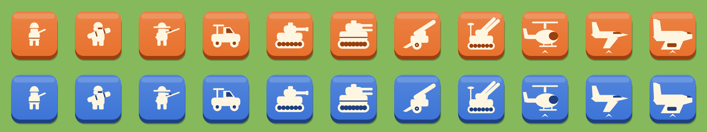
Generated by node tools/sprite-lab/lab.mjs gallery. Add a style file and rerun to include it.